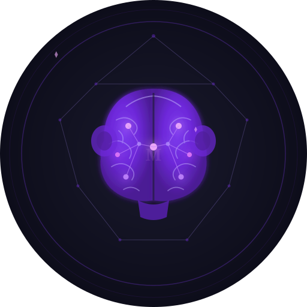

MunkymindYour AI tools forget you every conversation. Munkymind is an open-source personal context library: point it at your notes, and Claude, ChatGPT and other tools can draw on them whenever they need to.
Markdown, text, PDFs and GitHub repos you choose
On your machine: a searchable library of you, with sources and freshness
Claude Desktop, claude.ai, ChatGPT and other MCP clients
Your library stays on your machine. Note text goes only to the AI provider you choose, under your own key, or nowhere at all with Ollama.
Self-host with Docker. Your library is stored on your computer, and only reachable from it unless you choose to connect a remote tool.
Note text is sent only to the AI provider you choose (OpenAI or Anthropic), under your own key, to index it and write answers. Want nothing to leave your machine? Use Ollama, with no key at all.
Apache 2.0 licensed. Read the code, change it, add your own connectors.
You need Docker, git and one OpenAI API key. Full checklist: Before you start.
git clone https://github.com/munkymind/munkymind.git
cd munkymind
cp .env.example .env # then put your OPENAI_API_KEY in .envmkdir -p notes && cp -r ~/path/to/your/notes/* notes/
docker compose up -dNo notes handy? Set MM_NOTES_DIR=./examples/sample-notes in .env to try a small made-up library.
docker compose exec api munkymind setupSave the mm_sk_… key it prints. Then ask: docker compose exec api munkymind query --user yourname "What am I working on?"
http://localhost:8000/ui and paste your key to browse what it learned.A local viewer at localhost:8000/ui. Every topic is a brain: Body Brain, Business Brain, Big Picture Brain. Browse and search what each one knows, and see where it came from.
Type a question and see exactly which few snippets your AI would be sent, and how small that is next to your whole library. No AI is called.
Brains get hungry. Each one shows a mood, from 😋 fed to 😴 starving, so you know which notes are out of date before your AI relies on them.
“Plan my runs this week around my calendar.” Your plan, your rules and your week, without re-explaining them.
“Prep me for my 1:1 with Priya: open actions and what she raised last time.”
“Given my goals and this week, what are my top three priorities?” One answer that draws on work, strategy and calendar, with sources.
Connect GitHub, then ask Cursor or Claude Code: “Which of my repos already solve auth?”
What can I do with it?: a 15-minute tour, use cases and example prompts.
Munkymind is in early testing (latest release). Install it, try the tester missions with your real notes, and tell us how long it took and where you got stuck.
Get an email when there's something new: releases and major features only. Optional, and unsubscribe any time. You don't need it to use Munkymind.
We only use your address for Munkymind updates. Unsubscribe any time.